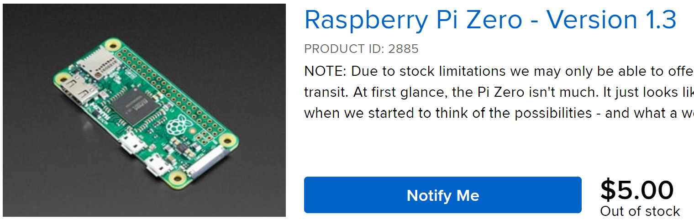

Composable Information Machine
2022-08-03A distributed knowledge encapsulation system based on Functional Reactive Programming and Event Sourcing.
Composable Information Machine

We have achieved something extraordinary in the last 50 years of Information Technology. IT became tiny and affordable to everyone.  I can buy a $5 postage stamp sized computer that can do enough processing to do real work and it's widely available.
The universe is made of events not objects - Carlo Rovelli
In less than a few centuries, our information devices have exploded from 1, our brain, to a few in books and physical objects, to thousands of digital and analog sources over our lifetimes. We need to participate in a world that is demanding more and more from us in order just to participate.
Computing today requires lots of information and a way to interchange it effectively, lest you will be the interchange. We need a standard way to connect it, relate it and query it.
We need more knowledge, faster, more often. From 2020 to 2025 it will grow from 64 to 180 zettabytes.
We want a Composable Information Machine.
A Composable Information Machine is a collection of computing devices (hardware), a collection of states, a Type System, and a recorded sequence of events and a peer-to-peer messaging system.
We connect several Sources of Truth to several Systems of Record with a secure peer-to-peer network where we control the peers and the channels. Everything can suddenly and securely talk.
Incorporate information decisions into our daily lives
Currently we spend far to much time processing information that could be fully automated. We can process information that exists all over the internet and obtain sensor input from all over the universe. Instead of re-centralizing or relocating all that information we can now adapt a new process to utilize it and optimize where it sits. Once we put everything in the cloud, retrieving it all at once becomes an impossible feat, even moving it around can become exceedingly difficult.
The 'network' is now ubiquitous with providers like StarLink.

Today, we have much better understanding of our cognitive abilities and how we are built than we did a hundred years ago when they were developing the theories used in our current computing process flows. We didn't know what DNA was when the Univac was built, yet we still use this same fundamental architecture today.
Self-assembly, replication and identification are key ideas that DNA helps to handle in biology. We have the same needs for information. Information Theory taught us how the math works to communicate information, however, structuring it has led to countless debate.
We will be using a style of structuring based on Merkle DAGs and accessing them as Block Storage in a Metric Space.

Several current theories take us from the single machine to the connected network, on to a truly distributed machine. Most of us aren't interested in becoming theoretical mathematicians or computer scientists, let alone linquists and statisticians just to understand our budget. We need an easier way to connect everything, without being subject to vendorization or great cost. Those interested may dive deeply into the theories that make up a Composable Information Machine we offer a wealth of connected understanding for the theories presented in the Library.
I want to own, understand, process and protect my information
Personal computers were supposed to be a tool for personal liberation, we achieved that. I now have dozens of computers in every room, data all over the internet and programming that goes back decades. Even though we have been talking about convergence for 30 years, we never achieved it.
It is now critical that we become able to understand our information and how it interacts with us and our environment.
With some initial planning as to how we present and work with information we can come to an achievable whole greater than the sum of it's parts.
- It needs to be made from readily accessible and available components which can all be identified, encapsulated and connected.
- It needs to be able to grow and learn and use new technology and help us understand how to achieve it.
This means both hardware and software are completely identified, defined and related in a way we can predictably understand. We will know exactly how the machine works and how it communicates. The machine is a single entity as a whole, made from many parts, connected in an environment, residing in the known universe.
A Composable Information Machine is a way to encapsulate information in a known, predictable manner in which we are in much more control of our global access to information. We now have a better ability to use it for making decisions that affect our lives rather than us being the sole machine to sort and access our information.
We need to cover structure, construction, types, power, networking, people, hardware and applications. We assemble these definitions into a set of Composable Information Machines. The set is a fractal. There is really only one machine acting recursively on itself, but that is more difficult to comprehend at first.
Composable Information Machine

We define an inventory system which, in turn, defines the informational limits and boundaries. We will combine many well-known services, yet see them as related and usable in very specific ways.
We can choose from many infrastructure resource modeling systems, the exact system is not important. We simply need a base that will act as the source of truth for our network. NetBox fulfills this for us nicely, if you need or want something else, you can use it. We fully expect NetBox to be replaced at some point so we start off expecting to plan for it.
Next, where do I put it? Anywhere actually, this is a containerized system, in this guide we will start with a Raspberry Pi 4B for the initial system. We want to start simple and grow the machine organically as we need it.
It starts with a clone of the
cim repositoryrunning the .devcontainer somewhere. You may do this on a laptop, on github, or anywhere else these docker containers are capable of running.
We will add clusters, cloud-services, racks of machines and many more containerized systems as we go. Expect whole systems to be replaced over time. This can easily be the biggest, fastest set of servers you want to put it on, we just don't require it. Start simple and scale.
NetBox is designed to be a centralized single source of truth while a Composable Information Machine is distributed and partitioned. To accommodate this we will be making two significant adjustments to how we use NetBox. We extend NetBox to have a Write model as well as to use Event Sourcing.
Abstracted interface to the network infrastructure model:
- Read Model from NetBox
- Write Model (abstracted from same then optimized)
- Event Sourcing
- Projections to create interaction and read model population
We will use the current NetBox data model as a READ Model for IRM. The Write Model is an abstraction we will create. We could abstract an API in Rust for our use with the Read Model, but there is one already built we can start from: rust-netbox.
Changes to NetBox directly can be immediately supported with n8n. Writes will be sent to an Event Store with the API of NetBox and our Type System.
Projections from the Event Store cause various actions (frequently modeled and tested in n8n to be performed based on the nature of the Event. Events are Strongly Typed and form a Type System used throughout the Composable Information Machine.
And to prove that this all works, we use Applied Category Theory